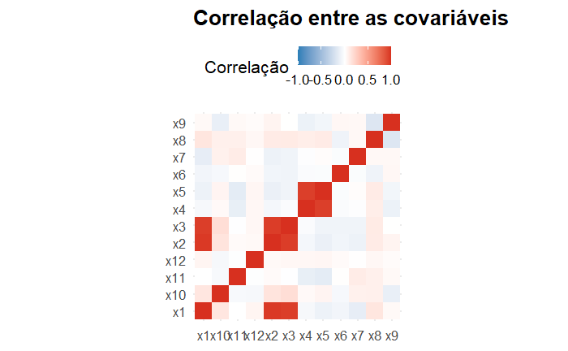
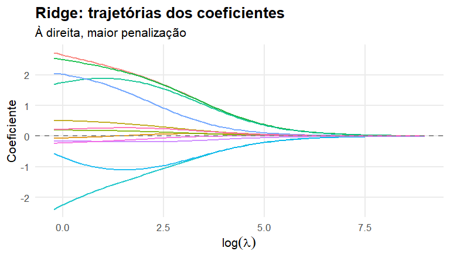
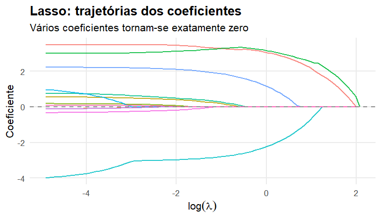
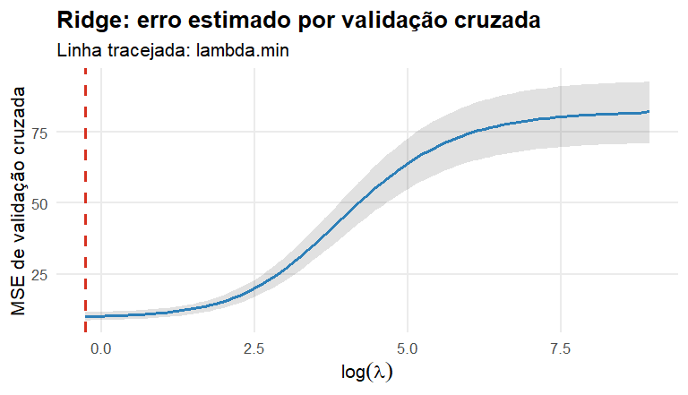
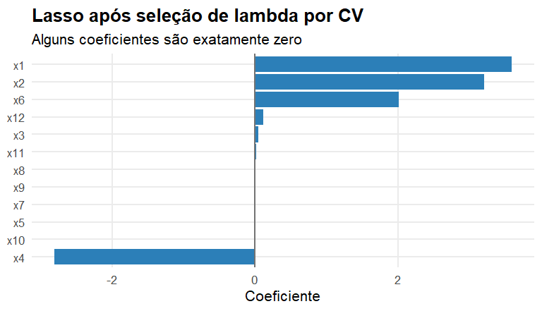

Parte I : Regressão
Regularização: Ridge, Lasso e Elastic Net
De onde partimos?
Até aqui, aumentamos a flexibilidade usando funções de base:
\[ g(x)=\beta_0+\sum_{k=1}^{K}\beta_kb_k(x) \]
Agora mudaremos a estratégia:
\[ \boxed{\text{em vez de apenas escolher a classe, vamos restringir o ajuste}} \]
A pergunta desta semana
Podemos aceitar um pouco mais de viés para reduzir a variabilidade e melhorar a predição?
A ideia será modificar \(RSS\) para
\[ \boxed{RSS+\text{penalização}} \]
Por que regularizar?
Quando MQO pode ter dificuldades?
- muitas covariáveis;
- covariáveis fortemente correlacionadas;
- \(p\) grande em relação a \(n\);
- muitas funções de base;
- coeficientes muito sensíveis à amostra.
O problema não é apenas ajuste.
\[ \boxed{\text{É também variabilidade}} \]
Um exemplo com preditores correlacionados
Multicolinearidade e instabilidade
Quando duas covariáveis carregam informação semelhante, diferentes combinações de coeficientes podem produzir predições parecidas.
Assim,
\[ \widehat\beta_j \]
pode variar muito entre amostras.
Predições razoáveis podem coexistir com coeficientes individualmente instáveis.
MQO sem restrição
\[ \widehat{\boldsymbol\beta}_{OLS} = \arg\min_{\boldsymbol\beta} \sum_{i=1}^{n} (y_i-\beta_0-\mathbf x_i^\top\boldsymbol\beta)^2 \]
O objetivo é apenas minimizar o erro de treinamento.
Regularização
Introduzimos uma preferência por soluções menos complexas:
\[ \boxed{ \widehat{\boldsymbol\beta} = \arg\min_{\boldsymbol\beta} \left\{ RSS(\boldsymbol\beta)+\lambda P(\boldsymbol\beta) \right\} } \]
\(P(\boldsymbol\beta)\) mede a complexidade da solução.
O papel de \(\lambda\)
\[ \lambda=0\Rightarrow\text{MQO} \]
\[ \lambda\uparrow\Rightarrow\text{penalização mais forte} \]
\[ \lambda\to\infty\Rightarrow\beta_j\to0 \]
Portanto,
\[ \boxed{\lambda=\text{hiperparâmetro de regularização}} \]
Viés em troca de menor variância
Regularização introduz deliberadamente shrinkage:
\[ |\widehat\beta_j|\downarrow \]
Podemos aceitar algum aumento de viés se obtivermos uma redução maior de variância:
\[ \boxed{ Bias^2\uparrow\quad+\quad Var\downarrow \quad\Rightarrow\quad \text{erro de teste pode diminuir} } \]
Ridge
Regressão Ridge
\[ \boxed{ \widehat{\boldsymbol\beta}^{R} = \arg\min_{\boldsymbol\beta} \left[ RSS+ \lambda\sum_{j=1}^{p}\beta_j^2 \right] } \]
O intercepto normalmente não é penalizado.
O que Ridge faz?
Quando \(\lambda\) cresce,
\[ |\widehat\beta_j^R|\downarrow \]
Mas, em geral,
\[ \widehat\beta_j^R\neq0 \]
Ridge encolhe os coeficientes, mas não costuma eliminar variáveis.
Trajetórias Ridge

Por que padronizar?
A penalização atua diretamente sobre
\[ \beta_1^2+\cdots+\beta_p^2 \]
Se as covariáveis estiverem em escalas muito diferentes, a penalização não será comparável.
Usamos tipicamente
\[ x_j^*=\frac{x_j-\bar x_j}{s_j} \]
Regularização depende da escala das covariáveis.
Ridge e preditores correlacionados
Quando variáveis carregam informação semelhante, Ridge tende a distribuir o efeito entre elas.
Isso pode ser vantajoso quando o objetivo principal é
\[ \boxed{\text{predição}} \]
e não a escolha de uma única variável representante.
Lasso
Regressão Lasso
\[ \boxed{ \widehat{\boldsymbol\beta}^{L} = \arg\min_{\boldsymbol\beta} \left[ RSS+ \lambda\sum_{j=1}^{p}|\beta_j| \right] } \]
A mudança da norma \(L_2\) para \(L_1\) tem uma consequência importante.
Lasso pode zerar coeficientes
Para valores adequados de \(\lambda\),
\[ \widehat\beta_j^L=0 \]
para algumas covariáveis.
Assim, Lasso realiza simultaneamente:
\[ \boxed{\text{shrinkage}+\text{seleção de variáveis}} \]
Trajetórias Lasso

Ridge × Lasso
| Característica | Ridge | Lasso |
|---|---|---|
| Penalização | \(\sum\beta_j^2\) | \(\sum|\beta_j|\) |
| Shrinkage | sim | sim |
| Coeficientes exatamente zero | geralmente não | sim |
| Seleção automática | não | sim |
| Preditores correlacionados | compartilha efeito | pode escolher alguns |
Interpretação geométrica
Ridge pode ser escrito como
\[ \min RSS \quad\text{sujeito a}\quad \sum_j\beta_j^2\le t \]
Lasso:
\[ \min RSS \quad\text{sujeito a}\quad \sum_j|\beta_j|\le t \]
A geometria ajuda a explicar por que o Lasso produz zeros.
A derivação e a interpretação geométrica ficam no material complementar.
Escolha de \(\lambda\)
Não existe um único Ridge ou Lasso
Cada valor de \(\lambda\) produz um modelo:
\[ \lambda_1\rightarrow\widehat g_{\lambda_1}, \qquad \lambda_2\rightarrow\widehat g_{\lambda_2}, \qquad\ldots \]
Precisamos selecionar a intensidade da regularização.
O que NÃO devemos fazer?
Não escolhemos \(\lambda\) pelo menor erro de treinamento.
O conjunto de treinamento já está sendo usado para estimar os coeficientes.
Precisamos avaliar os candidatos fora da amostra usada em cada ajuste.
Validação cruzada
Para cada \(\lambda\):
- dividir o treinamento em \(K\) folds;
- ajustar em \(K-1\) folds;
- avaliar no fold restante;
- repetir;
- calcular o erro médio;
- selecionar \(\lambda\).
\[ \boxed{\lambda\text{ é escolhido por CV}} \]
Curva de CV — Ridge

\(\lambda_{\min}\)
\[ \boxed{ \lambda_{\min} = \arg\min_\lambda \widehat R_{CV}(\lambda) } \]
É a escolha que minimiza o erro médio estimado por validação cruzada.
Regra de 1 erro-padrão
Também podemos escolher uma solução mais regularizada cujo erro esteja até um erro-padrão do mínimo.
Esse valor é usualmente chamado
\[ \lambda_{1se} \]
Ele favorece maior regularização sem evidência clara de perda relevante de desempenho.
\(\lambda_{\min}\) × \(\lambda_{1se}\)
\(\lambda_{\min}\)
Prioriza o menor erro médio estimado por CV.
\[ \widehat R_{CV}\downarrow \]
\(\lambda_{1se}\)
Aceita pequena diferença de erro para favorecer maior regularização.
\[ \text{simplicidade}\uparrow \]
Lasso selecionado por CV

O teste continua intocado
\[ \boxed{\mathcal D_{\text{treino}}} \rightarrow \boxed{\text{CV para escolher }\lambda} \rightarrow \boxed{\text{modelo final}} \rightarrow \boxed{\mathcal D_{\text{teste}}} \]
O teste não participa da escolha de \(\lambda\).
Avaliação final
pred_ridge <- as.numeric(
predict(cv_ridge,newx=x_test,s="lambda.min")
)
pred_lasso <- as.numeric(
predict(cv_lasso,newx=x_test,s="lambda.min")
)
c(
Ridge=sqrt(mean((y_test-pred_ridge)^2)),
Lasso=sqrt(mean((y_test-pred_lasso)^2))
) Ridge Lasso
3.423456 3.342429 Somente agora utilizamos o conjunto de teste.
Elastic Net
Um meio-termo
Elastic Net combina as penalizações:
\[ \boxed{ RSS+ \lambda\left[ (1-\alpha)\frac12\sum_j\beta_j^2 + \alpha\sum_j|\beta_j| \right] } \]
com
\[ 0\le\alpha\le1 \]
O papel de \(\alpha\)
\[ \alpha=0\Rightarrow\text{Ridge} \]
\[ \alpha=1\Rightarrow\text{Lasso} \]
\[ 0<\alpha<1\Rightarrow\text{Elastic Net} \]
Agora temos dois hiperparâmetros:
\[ \boxed{\alpha,\lambda} \]
Por que Elastic Net?
Com grupos de covariáveis correlacionadas:
- Ridge tende a manter o grupo;
- Lasso pode escolher apenas algumas;
- Elastic Net pode combinar efeito de agrupamento e esparsidade.
É especialmente útil quando há muitos preditores.
Tuning bidimensional
Agora avaliamos combinações
\[ (\alpha,\lambda) \]
Por exemplo,
\[ \alpha\in\{0,0.25,0.5,0.75,1\} \]
e uma grade de valores de \(\lambda\).
Cada par define um modelo candidato.
O pipeline reaparece
\[ \boxed{\text{Dados}} \rightarrow \boxed{\text{Modelo}} \rightarrow \boxed{\text{Treinamento}} \rightarrow \boxed{\text{Tuning por CV}} \rightarrow \boxed{\text{Modelo final}} \rightarrow \boxed{\text{Teste}} \]
- treinamento estima \(\beta\);
- tuning escolhe \(\lambda\) e, no Elastic Net, \(\alpha\).
Quando usar cada um?
Ridge
Muitos pequenos efeitos.
Preditores correlacionados.
Foco em predição.
Lasso
Esperamos solução esparsa.
Seleção de variáveis é desejável.
Elastic Net
Muitos preditores e grupos correlacionados.
Shrinkage + esparsidade.
Regularização é um princípio geral
Ela pode:
- reduzir variância;
- estabilizar coeficientes;
- lidar com multicolinearidade;
- ajudar quando \(p\) é grande;
- melhorar a generalização;
- produzir soluções mais simples.
\[ \boxed{\text{regularizar}=\text{controlar a complexidade do ajuste}} \]
Síntese
Ridge:
\[ P(\beta)=\sum_j\beta_j^2 \]
Lasso:
\[ P(\beta)=\sum_j|\beta_j| \]
Elastic Net combina ambas.
Quatro ideias para levar
- Regularização troca viés por redução de variância.
- \(\lambda\) controla a intensidade do shrinkage.
- Lasso pode produzir esparsidade.
- Hiperparâmetros são escolhidos por validação, nunca pelo teste.
Fechando o bloco
Agora conhecemos diferentes formas de controlar complexidade:
\[ \boxed{\text{representação}} \qquad \boxed{\text{flexibilidade}} \qquad \boxed{\text{penalização}} \]
Essas ideias reaparecerão em muitos algoritmos de aprendizado estatístico.